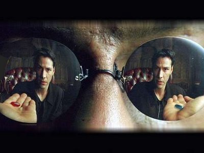
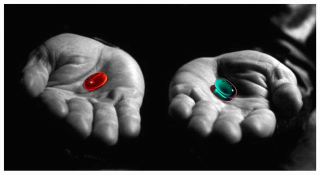

CONTATO
Para entrar em contato sobre: dúvidas, elogios, reclamações, sugestões ou qualquer outro tipo de assunto, mande um e-mail para:
sitechavedeluz@gmail.com
Tentarei responder aos e-mails o mais breve possível.
Desenvolvedora do site:
Karolina Aparecida dos Santos
Observações:
O conteúdo deste site foi criado a partir de crenças pessoais. Sendo assim, (como todo ser humano está suscetível ao erro!) cada informação aqui apresentada pode ser verdade, meia-verdade ou até mesmo mentira (eu acredito que sejam verdades). O mais inteligente é você não acreditar em nada nem em ninguém e buscar a verdade através de suas próprias pesquisas e vivencias pessoais. Pois, como você já deve ter percebido, muitas pessoas tentam nos manipular a todo o momento.
Partes deste site (ou quase tudo!) surgiu ou foi "acidentalmente encontrado" através de insights de pensamento, ou seja, como uma inspiração repentina vinda “do alto”. Acredito que nada é por acaso, se estas informações chegaram até você e lhe soaram como verdades em seu coração, tenha a absoluta certeza de que a vida quer que você saiba tudo aquilo de que você precisa saber.
Tudo aqui foi bem resumido, em “DICAS DE SITES” no topo da página, há links que levam a conteúdos mais completos sobre os temas apresentados, e que serviram de pesquisa para o mesmo.
|  |  |
Estas pílulas do filme MATRIX representam uma metáfora da condição humana: você quer se resignar de forma dogmática e aceitar passivamente tudo o que existe à sua volta ou deseja libertar-se e conhecer a verdade absoluta das coisas e o acesso ao conhecimento?
A vida é sua. O livre-arbítrio é todo seu!
Este site é somente uma chave, abrir a sua mente para tudo o que está ao seu redor ou não é de sua escolha!
Atenção: ESTE SITE FOI ORIGINALMENTE LANÇADO EM MAIO DE 2012. Portanto algumas das informações podem estar obsoletas e a codificação web HTML E CSS estão dasatualizadas. Este site foi desenvolvido com as tecnologias: HTML4, CSS2 e a ferramenta de desenvolvimento Adobe Dreamweaver CS5.
Obs.: Este site pode passar por modificações constantes. E em breve novo site totalmente repaginado e MUITO MELHOR! Aguardem!!!